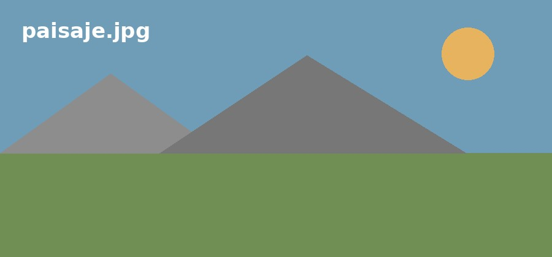
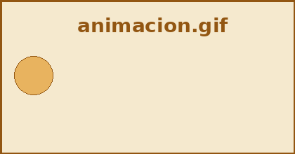

En este ejemplo veremos cómo se utiliza <img> para mostrar imágenes y cómo sus atributos permiten indicar el archivo, proporcionar información alternativa y controlar su tamaño de presentación. Las imágenes se encuentran en la carpeta "imagenes", por lo que usamos rutas relativas en el atributo src.

src → indica qué archivo de imagen debe mostrar el navegador. alt → proporciona un texto alternativo para la imagen. title → añade información adicional que el navegador puede mostrar al situar el cursor sobre la imagen.
width y height permiten determinar el tamaño con el que se muestra la imagen en la página. La segunda imagen utiliza una combinación de anchura y altura diferente de sus proporciones originales. Por eso aparece deformada. Estos atributos cambian el tamaño de presentación de la imagen; no modifican el archivo original.
PNG:
GIF:

JPG:
Los formatos tratados en la unidad tienen usos habituales diferentes: JPG/JPEG → habitual en fotografías e imágenes con muchos tonos. PNG → permite trabajar con transparencia. GIF → puede utilizarse para animaciones sencillas. El formato es una característica del archivo de imagen; la etiqueta <img> se utiliza para mostrarlo en la página.
Idea fundamental: <img> relaciona un elemento de la página con un archivo de imagen mediante src. alt describe la imagen mediante un texto alternativo. title proporciona información adicional. width y height controlan su tamaño de presentación. La ruta indicada en src debe localizar correctamente el archivo de imagen.